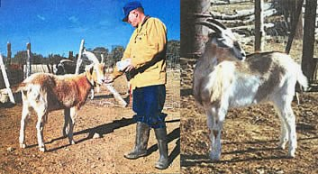
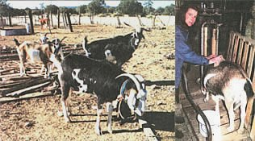
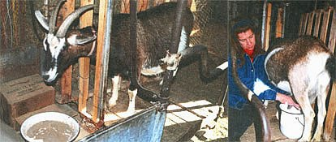
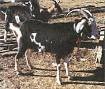
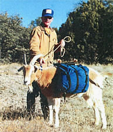

COUNTRY SKILLS
Loyal personable hard working. . . and a source of wonderful milk and cheese.
The goat is undoubtedly the most versatile livestock a homesteader can own. The homestead hog will eat your garbage and can produce lots of piglets for meat or sale, but you're not going to milk one or make any money selling cheese from a pig. Sheep, chickens, rabbits, turkeys, ducks, and the traditional milk cow all have their respective uses, but none will provide all of the following - milk, cheese, meat, brush control - within a handy one to two-hundred pound package that will also pack your gear on a hiking trip. The goat is the only animal named that you could honestly describe as personable. A homestead goat that's raised right is as loyal, charming, and companionable as the family dog, and in most cases a lot more useful.
Goats come in a great variety of breeds and strains. They are perhaps best defined by their three main commercial uses. Thus we have hair goats (that produce mohair and cashmere), meat goats (the Spanish goat and the Boer goat dominate the current market), and milk or dairy goats (common breeds include the Toggenberg, Nubian, Saanen, La Mancha, Oberhasli, and Alpine). The hair goat and meat goat industries are most prevalent in the American Southwest. Although hair goats and meat goats can be milked, butchered, or used for packing (my own homegrown goats have a lot of Spanish blood), most small-farm or homestead goats are dairy goats.
Since we're assuming that you are just starting out with the joys of homestead goats, the best goat to start with is a female (called a doe) that is pregnant. A pregnant doe will soon give you the priceless experience of birthing and raising baby goats (called kids), and shortly after that will provide the family with better milk and cheese than money can buy, often with some left over for sale. The breed, in my opinion, is not important. Goat fanciers, like dog and horse fanciers, like to brag about their breed, and they will argue the merits of their breed over those of any other breed. But the fact is that all the dairy goat breeds mentioned above produce good, hardy, milk-goats that will yield about a gallon of milk per day and be a pleasure to have around. Various hybrids and crosses of those breeds can be just as good. Note, however, that all the breeds mentioned can produce some real lemons, too, that may be unhealthy, poor milkers, and hard to handle. Jesse - bless her heart - is a case in point.
My wife and I acquired Jesse because we had an infant son who, we figured, should have better milk than money could buy. Once breast milk was no longer an option, we wanted goat's milk. Goat's milk has smaller, finer fat globules than cow's milk, making it easier for humans to digest. Straight from the doe, it will run, on average, about four percent butter fat, compared to a little over three percent for store-bought cow's milk. Any milk-drinker will benefit from goat's mills, but a baby will benefit most. In the store, however, goat's milk will run two to three times the price of cow's milk, so we could see the economy in having our own goat. We scanned the local "shopper" for goats for sale, and one afternoon went to see Jesse.
Our soon-to-be homestead goat was an Alpine/Nubian cross, bred to a good Alpine male (called a buck), and her mother, the owner said, produced better than one gallon per day every time she freshened. This was all good news and the price for Jesse, who was due to kid any day, was a mere hundred dollars. This was because "Jesse's a little bit shy."
We went into Jesse's pen and it was clear even to a city slicker that Jesse was wild as a March hare. If it hadn't been a small pen we never would have caught her. Jesse's horns were long and dangerous, but with three people working hard, we were able to carry her out to the pickup without anyone getting gored and we tied her down so she wouldn't destroy the camper shell on the ride home.
Within days, Jesse had two healthy kids, both does. In spite of her goofiness, she proved an excellent mother. She also produced far more milk than the two kids could use, so I began to milk her even before the kids were weaned. This meant herding Jesse into a small pen, roping her cowboy-style, leading her by force to the milking stanchion, then tethering her back feet so she wouldn't kick the bucket over. Even with that, we had plenty of spilt milk and skinned knuckles before Jesse agreed to be a milk goat.
In time, with patience and kindness, Jesse settled down and we had a long, productive relationship. Her milk helped give us the healthiest baby boy you could possibly imagine (he calls it "goat juice") and I'm sure I did better on it, too. But there's no need for a novice goat-owner to start out with a doe like Jesse. Healthy, tractable, good-milking does are available in any community.
Along with your local "shopper," check with your county extension agent and the local feed store for information about goats for sale. Take your time, ask questions, and don't necessarily take the first doe you look at. Most does come into heat in September or October, and since the gestation period of a goat is about a hundred and fifty days, pregnant does will most likely show up from November through March.
You may want to start with a doe but no kids. Milking does who have weaned their kids will be most prevalent through the spring and summer. With a little common sense and a bit of luck, you'll end up with a good doe on the first try.
Of course, before you bring your goat home, you need to give some thought to providing space and shelter for this new member of the family. If you have some acreage, that's all the better, but a goat or even two or three goats will do fine in a good sized, fenced-in yard or pen. Goats with less room to roam will appreciate a walk from time to time (more on this in the packing section). Chain-link fence works well, but is too expensive for a large pasture. We use Keystone Non-Climb fence, sometimes called horse fence, available at most any lumber and supply yard. It's a heavy gauge woven wire with two-inch spacing that the goats can't get their heads through. For larger acreage, standard field fence, used by commercial sheep and goat raisers, works well and is also readily available. Fencing should be at least five feet high. Goats are not hard to confine, provided they are well fed, healthy, and comfortable. An unhappy goat is by definition an escape artist.
Goats are more heat tolerant than cattle, sheep, or hogs; in warm weather they need nothing more than shade, water, and, if indoors, ventilation. In winter they need shelter. For our New Mexico winters, a lean-to is sufficient. In northern climates, goats need an enclosure, a barn or shed, and plenty of straw or wood shavings for some bedding. Most goats will grow a good winter coat and won't suffer in cold weather, but you have to keep them dry and out of the wind. The main impediment these days to keeping a goat is not weather or the expenses of fencing or housing but rather the vast array of urban regulation that generally makes anything listed as "livestock" an illegal animal. Actually, a goat or two is generally less of a bother to neighbors and society than the dogs some people raise. Rural residents shouldn't have any trouble. Urban and suburban homesteaders will need to learn the rules and obey them.
Entire books have been written on the unique digestive powers and feed needs of goats. Myths abound. Goats don't eat tin cans or flannel shirts, but they will pull your clothes off the line for the fun of it. We will necessarily keep to the basics here.
On pasture, goats will eat a little bit of everything. They'll eat some grass, but most will vary their diets with leaves, weeds, bark, pine needles, and all manner of brush. I have a friend who lives in the rainy part of Washington State. He has two mules and a heifer on six acres of well-watered pasture. They keep the grass eaten down, but little by little the pasture was being taken over by brush. He got a goat and put her on the pasture. Little by little, the brush is being trimmed away. Such a goat needs nothing more than water and a mineralized salt block as supplement to be well-fed and healthy.
Most folks, however, will need to feed their goats, especially pregnant or milking does. The two basic feeds will be hay and grain, with the emphasis on the hay. A wether (a castrated male goat), a dry doe, or a buck will do fine on grass hay. Pregnant or milking does need the extra protein and nutrition of alfalfa hay, or a grass/alfalfa mix. One flake of hay per adult goat, fed morning and evening, is about right. Put it out in a feeder or hay rack to keep it off the ground. Once the hay gets dirty, a goat won't eat it. If you start to find clean hay left over from the last feeding, you can always cut back. With grain, a wether, buck, or dry doe will do fine on about a half pound of rolled oats, barley, milo, or cracked corn per day. A pregnant or milking doe should be fed about a pound of prepared feed per day (a half pound each morning and evening). This prepared feed is available at most feed stores and is generally referred to as "dairy feed." It's a mixture of grains, about sixteen percent protein, with added molasses, vitamins, and minerals. Goats should also have a mineralized salt block available and, of course, fresh, clean water at all times.
Goats will seldom over-feed on hay or browse, but they will over-feed on grain. With grain or prepared feed, too little is better than too much. A goat that eats too much grain may bloat, and a goat with bloat may be in serious trouble. A goat needs a diet made up mostly of roughage - browse and/or hay - for a healthy digestive tract.
You can greatly reduce the price of hay by buying it by the ton. You can greatly reduce the price of grain by buying it bulk at a grain elevator. Get some fifty-five-gallon drums, clean them out, then load them in the back of a pickup. At the elevator you pull in under the hopper and fill the drums. I buy rolled milo in bulk at about half the price of bagged milo. I buy the prepared dairy feed in fifty-pound sacks. For one or two goats, small purchases of feed are fine. I have six adult goats, plus kids. For a real goat herd, quantity purchases are a must.
In our increasingly urban society, some people are astounded to learn that in order for a goat to produce milk every year, she must first breed, get pregnant, and have kids. I'm assuming that you have purchased a bred doe. You have thus purchased two or more goats for the price of one. It's more likely "more." Two kids is the most common number of offspring for a goat. Three is as common as one. Four kids (good grief?) is uncommon but possible.
As the big day nears, some goat owners approach heart failure over their doe having kids. But goats have been doing this with no human help whatsoever for thousands of years with a success rate of well over ninety percent. As the day nears, the doe should be confined to a small pen or shelter with good straw bedding. If you can be there when it happens, fine. But you'll likely get fooled and will come out one morning to find two kids born, already on their feet, and nursing. The milk the doe produces for the first few days is called colostrum - it's thick, yellowish, sticky, and contains nutrients and antibodies that are essential for the kids' well-being. It's for them, not for you.
Your big decision at this point is whether to bottle-feed or let mamma do it. Bottle-feeding produces kids that are well bonded to humans and you may be able to wean the kids earlier by having close control of the milk supply. It means at least four feedings a day for the first few weeks, however, whether you're in the mood or not. If you chose to bottle-feed, get the bottle and nipple at the feed store, separate the doe from the kids, milk the doe, fill the bottle, and give the nipple to the kids. It may be slow going at first, but as they get hungry they'll figure out how to get milk out of that bottle.
I'm inclined to let mamma do it. I do, however, spend a lot of time the first few days with the kids to make them people-friendly. I talk to them, pet them, put them in my lap, and just generally try to be a goat. All this is done with the mother present. If mamma is calm and trusting in your presence, the kids will pick up on it. Kids that are bonded right away with people are much easier to handle later on. Once you've had a Jesse, you won't want to deal with another goofy goat.
At one to two weeks, the kids will begin nibbling hay and grain. This should be encouraged by giving them fine, leafy hay and some of that good prepared feed. Feed it to them by hand whenever possible; it's almost as good as bottle feeding for making a goat bond to people.
The kids can, and should, be weaned at eight to twelve weeks. At about eight weeks, I begin to separate the kids from the mother for about half the day. Of course, they should have good feed available at this time. Soon I have them separated from the mother all day long, letting them back together at night. By twelve weeks, you can keep them separated day and night. The kids are now capable of keeping themselves fed and healthy on good hay and dairy feed; the doe's mills is all yours. Later, you can let the kids and mother back together again. The kids may make a stab at nursing, but the mother will generally snarf them off and will be content to let all her milk go into a pail.
Because dairy goats have been bred for milk production for centuries, they are able to produce far more milk than is needed to raise a couple of kids. So you can begin to have homegrown goat milk in the house well before the kids are weaned.
About a week after the kids are born, you can start to mills the doe twice a day. Don't expect a lot of mills at first - maybe just a pint or two at each milking. Once the kids are weaned you will want to milk the doe down at each milking to maximize production. Before they're weaned, it's best to leave some each time for the kids,. Because the kids are nursing every few hours, they will keep the udder "exercised" for maximum production.
You can expect milk production to gradually increase till it peaks at about three months. A good doe will then give three to six quarts per day (that's the total for two milkings) for a four to six-month span before slowly slacking off during the next breeding period. You'll want to allow the doe to dry off for a couple of months before she kids again.
The mechanics of the milking process are very important. Generally when someone says they don't like homegrown mills from goats or cows, it's not due to the animal but because of the way the milk was handled.
You'll want something in the way of a stanchion where your doe will be milked at the same time and place every day. There are books available that will tell you how to build one (see the bibliography), but for a good, steady doe who will stand to be milked as a goat should, you can do fine with nothing more than the following.
In a quiet place in your shed or barn, stand and secure a wood pallet right across from where you plan to place your milking stool. Lay another pallet on the floor between the standing pallet and the stool. This is what she'll stand on while she's being milked. Secure a crossbar where the doe's head will be while she's being milked. Put a collar and a leash on your doe, just like on a dog. Lead her into the slot between the pallet and the milking stool and tie her to the crossbar with the leash. Leave enough slack in the leash so she can dip her head to a feed dish. She will now be standing on the floor pallet, in a slot between the standing pallet and you, and will be in good position for milking when you are sitting on the stool. As in saddling a horse, always work from the same side.
Take a grooming brush and brush her down; she'll like that. Take a wash cloth, get it wet (use warm water if at all possible), and give the udder a good massage and cleaning; she'll like that, too. Put a half pound to one pound of dairy feed (a coffee can makes a good scoop) in the feed dish; she'll like that best of all. Take a seat on the stool and you're ready to begin milking a goat.
Now how do you get milk to come out of those udders without getting your hand kicked, the bucket rolled, or the job taking all morning? It's a lot easier for a beginner to start with goat who's steady and has been milked before (remember Jesse!). First, take a nipple between thumb and forefinger and clamp down. You have thus trapped milk in the nipple so it can't go back up into the udder. Then squeeze down with the remaining fingers and - eureka! - milk comes out of the nipple. Use the other hand to do the other nipple. Always squeeze out a squirt or two before you use the bucket; you'll end up with cleaner milk.
In time, you'll develop a rhythmic bump, clamp, and squeeze motion that is very efficient. The main thing is not to clamp and squeeze the milk glands up in the udder; that may draw a kick. Once you and your doe are working well together, you will feel her "let down" a minute or two into each milking. She is releasing her milk from the udder. The milk comes faster then, and you have been accepted by a goat!
I'm not a commercial goat keeper, but I can milk out a goat in five to eight minutes, all the while contemplating various philosophical themes and listening to Morning Edition on NPR. Milking is not all that time consuming, it's just that someone has to do it every morning and every evening at the same time.
You should use a good stainless steel or an enamel-coated seamless milk pail, so you can get the pail utterly clean after each use. Once you have the milk in the pail it's important to get it cooled down as soon as possible. Take it straight to the kitchen and pour it through a milk filter into the milk jar. You can buy milk filters at feed stores and from livestock supply catalogs (see bibliography). You can also use a coffee filter, but the flow-through is slow. As soon as you have the milk in the jar, put it in the fridge. Sweet tasting, quality milk comes from contented, well-fed goats, a clean milking operation, and a quick chill of the milk.
Personally, I would no more pasteurize our own raw goat milk than I would cook a steak well done. It's your call. You can't legally sell raw milk (though people always have and always will) but you can use it yourself. If you want to pasteurize your milk, it merely involves heating the milk to 165°F for fifteen seconds. A home-size pasteurizer, available again from feed stores and supply catalogs, makes it easier.
You will likely end up with more goat milk than you can drink. The cat will take some, and so will the chickens. But the best use of the surplus is to make cheese. Goat cheese is the best cheese in the world. If you don't believe me, check the price of the stuff in the grocery store. There are dozens of recipes, but here are two that have worked well for us.
Ricotta Cheese
Put one teaspoon of citric acid (granular) in a quarter cup cool water and dissolve. Add this to one gallon of fresh milk. Heat the milk to 185°F, stirring often to avoid scorching. Remove from heat and let set for ten minutes. The milk will coagulate into very tiny curd particles. Pour the hot curd and whey into a colander lined with fine cheesecloth. Use a spoon to gently stir the curds and allow the whey to go through the cloth. You can control how creamy or dry you want your cheese at this point. We save the whey that goes through the cheesecloth for the chickens. Put the cheese into a covered bowl and refrigerate.
Queso Blanco
Heat one gallon of fresh milk to 195°F, stirring often to avoid scorching. Stir in a quarter cup of vinegar (any type will do, choose for flavor). Remove from heat and let set for ten minutes. The milk will coagulate into solid white curd particles and clear whey. Pour the hot curd and whey into a cheesecloth-lined colander, lift, and form the cheesecloth into a bag. Hang for one hour until the curd has stopped dripping. Store in plastic wrap in the refrigerator. This is a sliceable, gratable cheese that is excellent for cooking.
There is a ready market for good goat cheese, and while the health regulations vary from state to state, they are not as stringent as for the sale of milk With goat cheese selling at five to ten dollars per pound, you can recoup some of your costs or even start a small business making cheese.
Just starting out with one or two does, you probably won't want to keep a buck. A buck will eat hay and grain, will not give any milk, and will stink during the breeding season. When it comes time to breed your doe, take her to a buck, pay the stud fee, and leave her for a week or two. A doe will recycle during the breeding period until bred, or until the breeding season has passed.
The question will arise: what to do with the kids? This can be a touchy question that you will want to ask yourself before you end up with a herd of goats. You can't keep them all, and may not want to keep any. Young does will one day be milkers and in my experience are readily salable through "shopper" ads and the like. A usua l price will be twenty-five to fifty dollars for a weaned doe, three to four months old. A bred doe or a milking doe will commonly sell for one hundred to three hundred dollars. Some registered stock will bring much higher prices than that.
Young bucks and wethers can be sold as meat goats, or you can butcher them yourself. We like cabrito - called chevon in the East - here at our place, and we butcher at three to six months. It's not that difficult, once you know how, but I'm not going to claim it's pleasant. Bucks over four months should be castrated before slaughter. If you can't see yourself butchering a goat, or selling the animal to someone who will, you might want to think twice about raising goats. Or you might consider raising and training pack goats.
This is the latest thing in goat keeping. Goats can be excellent pack animals. Instead of putting the typical thirty-five to fifty pound backpack on your shoulders, you let a goat do the work. A good pack goat will carry at least twenty-five percent of his body weight (a two-hundred-pound wether will pack about fifty pounds), will follow you like a dog, will feed himself along the trail and around camp, and will be a pleasure to have around.
Any breed will do, but you want a big, leggy goat. Wethers are preferred as they are as big as a buck but have the disposition of a doe. Does may also be packed but they are smaller and carry less weight. Goat packing has given male goats a new function in the modern world.
A detailed discussion of pack goat training is beyond the scope of this article, but I can tell you that the key to success is to raise goats that are well bonded to people. A people-friendly goat will follow you anywhere in the woods and will work hard with a load rather than be left behind. When packing with several goats, good packers will not only stay with you, they will stay with each other, because goats are natural herd animals.
Pack goats work so well they are putting a lot of llamas, mules, and burros out of business. No other pack animal can travel rough terrain as well. No other pack animal can feed himself along the way as well. No other pack animal can ride in the back of pickup or utility trailer as well. No other pack animal is as friendly and personable around camp.
Last fall, my wife and I wanted to take our two-year-old son on his first wilderness camping trip. We had a baby backpack so we could take turns carrying him, but who would carry the gear? We used two of our wethers, Spike and Bravo, and they packed the sleeping bags, the food, the cooking gear: darn near everything. We packed-in five miles from the nearest road, camped along a trout stream, caught fish, had a great time, and packed-out three days later. The goats did most of the work. It wouldn't have worked without them. There is a good book on pack-goats by John Mionczynski. Goat pack-saddles and panniers are available from several manufacturers (see bibliography).
Like I said, the goat is the most versatile homestead animal. But remember Jesse. I sure do. You want to start right with homestead goats.
Raising Milk Goats The Modern Way (Storey Communications, 1990), by Jerry Belanger. Comprehensive. Includes cheese recipes, butchering, soap from goat milk.
Goat Tracks: Journal of the Working Goat , 37719 SE 35th St., Washougal, WA, 98671. A dandy magazine for goat packers. Includes sources for dairy supplies and goat packing-gear.
Aids to Goatkeeping (Dairy Goat journal, 1961. Reprinted many times) by Corl A. Leach and C. E. Leach. Very informative. Geared towards the commercial dairy goat farmer.
The Pack Goat (Pruett Publishing, 1992) by John Mionczynski. Everything you need to know to raise and train a pack goat.
|
 Left: ""Spike,"" a 3/4 Toggendberg, 1/4 Nubian wether. Right: ""Bravo,"" a 3/4 Spanish, 1/4 Alpine wether. |
 Left: the goat with large flaring horns is a Spanish buck. Right: giving a good brushing before milking. |
 Left: Alpine does gets a half pound of dairy food at milking. Right: milking in a wooden pallet stanchion. |
|
 ""Franklin,"" a Spanish wether, stands thirty-six inches at the withers. |
 Spike weighs over two hundred pounds and can pack fifty to sixty pounds. |
|